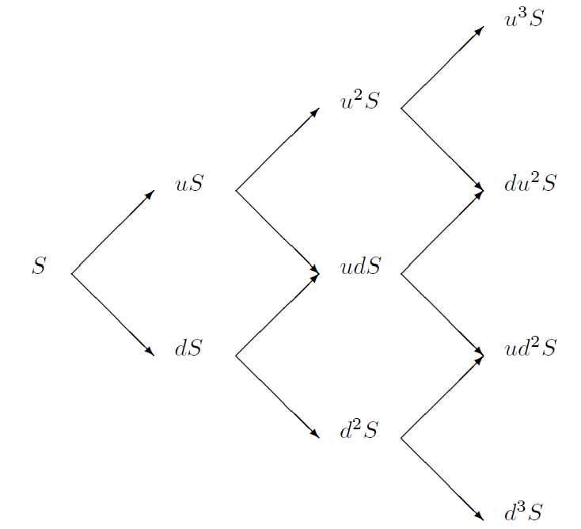
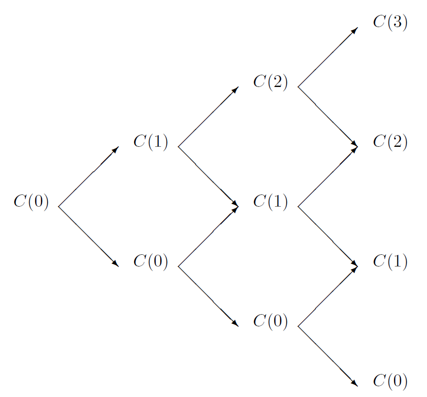
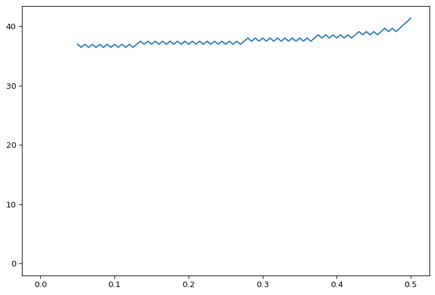
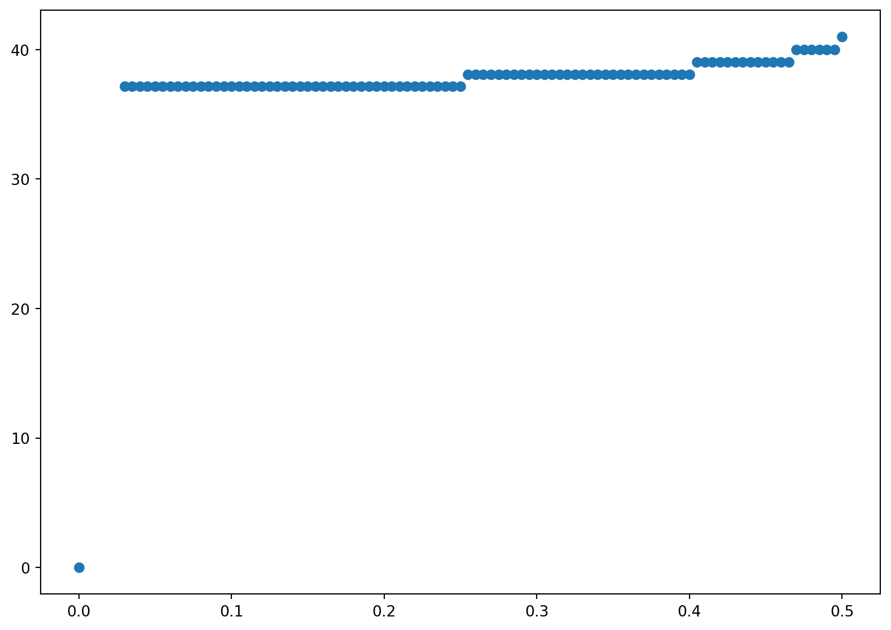
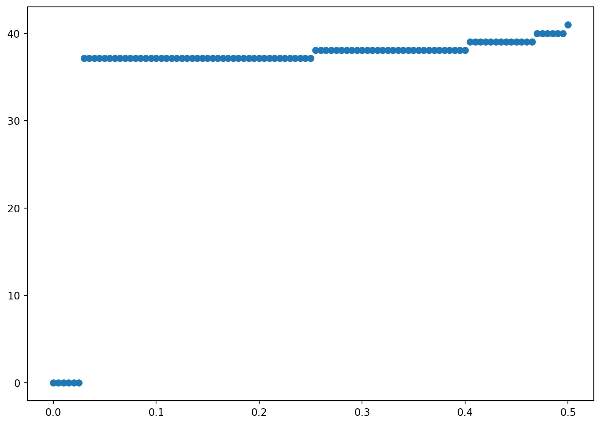

21 Binomial and Trinomial Models
In this chapter, we will introduce two principal numerical methods for valuing derivative securities: Monte Carlo and binomial models. We will consider two applications: valuing European options in the presence of stochastic volatility with Monte Carlo and valuing American options via binomial models. Throughout the chapter, we will assume there is a constant risk-free rate. The last section, while quite important, could be skimmed on first reading—the rest of the book does not build upon it.
21.1 Introduction to Binomial Models
As in the previous section, we will work with the dynamics of the logarithms of asset prices under the risk-neutral probability. Thus, our starting point is the equation \[ \,\mathrm{d}\log S = \left(r-q-\frac{\sigma^2}{2}\right)\,\mathrm{d}t + \sigma\,\mathrm{d}B\;, \qquad(21.1)\]
where \(B\) represents a Brownian motion under the risk-neutral probability.
In the binomial model, we assume that if the stock price is \(S\) at the beginning of the period, it will be either \(uS\) or \(dS\) at the end of the period, where the multiplicative factors \(u\) and \(d\) are constants to be determined. This means that the rate of return is \(\Delta S/S = u\!-\!1\) in the up state and \(\Delta S/S = d\!-\!1\) in the down state. There are three parameters to the model: \(u\), \(d\), and the probability \(p\) of the up state (the probability of the down state being necessarily \(1\!-\!p\)). The following illustrates a three-period model.

A tree constructed like this is recombining in the sense that the stock price after an up-down sequence is the same as after a down-up sequence. This is very important for reducing the computation time. For example, the number of nodes at the final date is \(N+1\) in a recombining tree, where \(N\) is the number of periods, but it is \(2^N\) for a non-recombining (sometimes called bushy) tree. Hence, the computation time will increase linearly with \(N\) for a recombining tree but exponentially with \(N\) for a non-recombining tree. Unfortunately, this computational savings is generally not possible for path-dependent options, because the number of distinct paths through a tree (whether recombining or not) is again \(2^N\).
The value of a European derivative is of course the discounted expectation of its value at maturity, discounting at the risk-free rate and taking the expectation under the risk-neutral probability. The binomial tree allows us to approximate the expectation very easily. We simply sum over the nodes of the tree at the option maturity and weight each node by its binomial probability. In an \(N\)-period model, the probability of the top node is \(p^N\), since the stock must go up each time to reach the top node. There are \(N\) paths reaching the second node from the top (since the period of the single down move could be any one of the \(N\) periods) and each such path has probability \(p^{N-1}(1-p)\); therefore, the probability of reaching the second node from the top is \(Np^{N-1}(1-p)\). More generally, the probability of going up \(i\) times and down \(N-i\) times is \[\frac{N!}{i!(N-i)!}p^i(1-p)^{N-i}\; ,\] where as usual \(x!\) denotes \(x\) factorial. Therefore, the expectation, for a European call option, is the following sum over the \(N+1\) nodes at date \(N\) (starting with \(i=0\) up moves and ending with \(i=N\) up moves): \[ \sum_{i=0}^N \frac{N!}{i!(N-i)!}p^i(1-p)^{N-i}\max(u^id^{N-i}S-K,0)\;. \qquad(21.2)\]
Multiplying the expectation by \(\mathrm{e}^{-rT}\) yields the option value.
It is worthwhile to emphasize the close connection between this method and the Monte-Carlo method discussed in the previous section. In the Monte-Carlo method for valuing a European call option, we generate \(M\) random values for \(S_T\) and estimate the expectation \(\\E^R[\max(0,S_T-K)]\) by averaging the \(M\) values. This amounts to approximating the distribution of \(S_T\) by an \(M\)–point distribution, each point being assigned equal probability. In the binomial method, we choose a particular set of points for \(S_T\) and assign the probabilities specified above in order to approximate the distribution of \(S_T\). Both the Monte-Carlo and the binomial approximations are known to converge to the continuous-time distribution of \(S_T\) as the number of points increases. However, by specifically choosing the points and their probabilities, the binomial method allows us to use a much smaller number of points to obtain the same accuracy; i.e., for a given desired accuracy, we can use many fewer periods \(N\) in the binomial model than we would need simulations \(M\) in the Monte-Carlo method. Thus, the binomial method will be much faster. Furthermore, as we will discuss in the next section, the binomial method is much better for pricing American options. On the other hand, as mentioned in the previous section, to value a path-dependent option in an \(N\)–period binomial tree would require the analysis of \(2^N\) separate paths, so Monte Carlo may be faster for path-dependent options. Finally, as we will discuss in Section 21.6, Monte Carlo may be faster for options on multiple assets.
There is an important alternative method for calculating the sum Equation 21.2, which is usually called backward induction. We will describe it here and implement it in the next section to value American options. We begin at the last date, where there are \(N+1\) nodes. We calculate the option value at each of these nodes, storing the value at the bottom node as \(C_0\), the value at the next node up as \(C(1)\), etc. This is illustrated in the diagram on the next page. Then we step back to the penultimate date. At each node at this date, we calculate the option value as the discounted expectation of its value at the last date. From each node, there are two nodes that can be reached at the next date, corresponding to a down move or an up move. So, the option value is calculated as \[ C = \mathrm{e}^{-r\Delta t}p\,C_{\text{up}} + \mathrm{e}^{-r\Delta t}(1-p)C_{\text{down}}\;. \qquad(21.3)\]
In terms of the vector notation shown in the figure below, the down move from node \(i\) is also node \(i\) and the up move is \(i+1\). So, we write over the elements of the \(C\) vector as \[ C(i) = \mathrm{e}^{-r\Delta t}p\,C(i+1) + \mathrm{e}^{-r\Delta t}(1-p)C(i)\;. \qquad(21.4)\]
Discounting back through the tree like this, we reach date \(0\) and return the option value as \(C_0\). The virtue of this procedure is that it calculates a value for the option at each node in the tree, the value being the discounted expectation of the subsequent values attained by the option. This approach is essential for assessing the value of early exercise.

21.2 Binomial Parameters
Several different ways have been proposed for matching the binomial model to the continuous-time model. Consider an \(N\)–period binomial model for a time period of \(T\) years. This means that the length of each period is \(\Delta t = T/N\). In the continuous-time model, over a discrete time period \(\Delta t\), we have \[\Delta \log S =\mathrm{n}u\,\Delta t + \sigma\,\Delta B\; ,\] where \(\mathrm{n}u = r-q-\sigma^2/2\) and \(B\) is a Brownian motion under the risk-neutral probability. The mean and variance, under the risk-neutral probability, of \(\Delta \log S\) in the continuous-time model are \[\begin{align*} \\E^R[\Delta \log S] &= \mathrm{n}u\,\Delta t\; ,\\ \mathrm{var}^R[\Delta \log S]&=\sigma^2\Delta t\; , \end{align*}\] so \[\begin{align*} \frac{\\E^R[\Delta \log S]}{\Delta t} &= \mathrm{n}u\; ,\\ \frac{\mathrm{var}^R[\Delta \log S]}{\Delta t}&=\sigma^2\;. \end{align*}\] In the binomial model, we have \[\begin{align*} \frac{\\E^R\big[\Delta \log S\big]}{\Delta t} &=\frac{p\,\log u+(1-p)\log d}{\Delta t}\; ,\\ \frac{\mathrm{var}^R\big[\Delta \log S\big] }{\Delta t}&=\frac{p\,(1-p)(\log u-\log d)^2}{\Delta t}\;. \end{align*}\] In order for the binomial model to converge in the appropriate sense to the continuous-time model as the number of periods \(N \rightarrow \infty\) keeping the total amount of time \(T\) fixed (equivalently, as \(\Delta t \rightarrow 0\)), it is sufficient that \[\begin{align*} \frac{p\log u+(1-p)\log d}{\Delta t} &\rightarrow \mathrm{n}u\; ,\\ \frac{p\,(1-p)(\log u-\log d)^2}{\Delta t} &\rightarrow \sigma^2\;. \end{align*}\]
The most popular model is probably that proposed by Cox, Ross and Rubinstein (Cox, Ross, and Rubinstein 1979), who set \(d=1/u\) and
\[ u = \mathrm{e}^{\sigma\sqrt{\Delta t}}\;, \qquad(21.5)\]
\[ p = \frac{\mathrm{e}^{(r-q)\Delta t}-d}{u-d}\;. \qquad(21.6)\]
Another well-known model is that of Jarrow and Rudd (Jarrow and Rudd 1983), who take \(p=1/2\) and
\[ u = \exp\left(\left((r-q-\frac{1}{2}\sigma^2\right)\Delta t + \sigma\sqrt{\Delta t}\right)\;, \qquad(21.7)\]
\[ d = \exp\left(\left((r-q-\frac{1}{2}\sigma^2\right)\Delta t - \sigma\sqrt{\Delta t}\right)\;. \qquad(21.8)\]
Yet another method is proposed by Leisen and Reimer (Leisen and Reimer 1996), and Jackson and Staunton (Jackson and Staunton 2001) show that it is more efficient for approximating the Black-Scholes value of a European option than are the Cox-Ross-Rubinstein and Jarrow-Rudd trees.
For illustration, the Cox-Ross-Rubinstein tree will be implemented below.
Binomial Valuation of European Options
The binomial model for path-independent European options can be implemented as follows. We will use the Cox-Ross-Rubinstein parameters. We first define the binomial parameters and some useful constants, denoting the probability \(p\,\) of an up move as \(pu\) and the probability \(1-p\) of a down move as \(pd\). The routine below uses the combinatoric function comb(N,i) to compute the term \(\frac{N !}{i! (N-i)!}\).
Code
import numpy as np
from scipy.special import comb
# Binomial Model for European Option
r = .1 # interest rate
sig = .2 # volatility
T = .5 # Expiration
q = div = 0.0 # Dividend
S0 = 42 # initial stock price
K = 40 # strike price
times =100 # Number of steps
dt = T/times
delt = np.exp(-div*dt)
a = np.exp(r*dt)*delt
u = np.exp(sig*np.sqrt(dt))
d = 1/u
pu = (a-d)/(u-d)
pd = 1-pu
vec = np.arange(times + 1)
vec1 = np.array([1] * (times + 1))
S = np.array([0] * (times + 1))
S = S0*u**(2*vec-times*vec1)
C = np.maximum(S-K*vec1,0*vec1)
CC = comb((times)*vec1,(times)*vec1-vec)*pu**(vec)*pd**(times*vec1-vec)*C
Call = sum(CC)*np.exp(-r*T)
print('The Value of the European Call is=',Call)The Value of the European Call is= 4.761818357763364The Black Scholes value is shown below.
Code
from scipy import stats
import numpy as np
from scipy.optimize import minimize, minimize_scalar
def blackscholes(S0, K, r, q, sig, T, call = True):
'''Calculate option price using B-S formula.
Args:
S0 (num): initial price of underlying asset.
K (num): strick price.
sig (num): Black-Scholes volatility.
T (num): maturity.
call (bool): True returns call price, False returns put price.
Returns:
num
'''
d1 = (np.log(S0/K) + (r -q + sig**2/2) * T)/(sig*np.sqrt(T))
d2 = d1 - sig*np.sqrt(T)
# norm = sp.stats.norm
norm = stats.norm
if call:
return np.exp(-q*T)*S0 * norm.cdf(d1,0,1) - K * np.exp(-r * T) * norm.cdf(d2,0, 1)
else:
return -np.exp(-q*T)*S0 * norm.cdf(-d1,0,1) +K * np.exp(-r * T) * norm.cdf(-d2,0, 1)
truebsc = blackscholes(S0,K,r, div, sig,T)
print('The exact Black Scholes Price is=', truebsc)The exact Black Scholes Price is= 4.759422392871532An alternative way to calculate te value of the call is to use a loop. This takes longer to run but is perhaps easier to understand.
Code
for i in range(times+1):
S[i] = S0*u ** (2*i-times)
C[i] = max(S[i]-K,0)
CC[i] = comb((times),(i))*pu ** (i)*pd ** (times-i)*C[i]
Call = sum(CC)*np.exp(-r*T)
print('The Value of the European Call is=',Call)The Value of the European Call is= 4.76181835776336421.3 Binomial Models for American Options
Early exercise features are very simple to handle in a binomial framework. One only has to use the backward induction approach and check the optimality of early exercise at each node. Exercise is optimal when the intrinsic value of the option exceeds the discounted expected value of the option contingent on not exercising. When we back up in the tree, we check whether exercise is optimal, and, when it is, we replace the discounted expected value with the intrinsic value.
Early exercise is more important for puts than for calls (as discussed in ?sec-s:fundamentalconcepts, an American call on a dividend-reinvested stock should not be exercised early) so we will change our symbol for the option value from \(C\) to \(P\). For a put option, we would calculate the value at each node at the end of the tree as described in the previous section: \[ P(i) = \max\left(0,K-u^{i}d^{N-i}S\right)\;, \qquad(21.9)\]
for \(i=0,\ldots,N\). For a European put, we would also back up in the tree in accord with Equation 21.4: \[ P(i) = \mathrm{e}^{-r\Delta t}p\,P(i+1) + \mathrm{e}^{-r\Delta t}(1-p)P(i)\;. \qquad(21.10)\]
To accommodate early exercise, we simply need to assign to \(P(i)\) the larger of this value and the value of early exercise. At node \(i\) at date \(n\) the stock price is \(u^{i}d^{n-i}S\) and the intrinsic value of a put option is \(\max(0,K-u^{i}d^{n-i}S)\). Therefore we replace Equation 21.10 with \[ P(i) = \max\big(K-u^{i}d^{n-i}S, \;\mathrm{e}^{-r\Delta t}p\,P(i+1) + \mathrm{e}^{-r\Delta t}(1-p)P(i)\big)\;. \qquad(21.11)\]
This will be explained in more detail later.
Binomial Valuation of American Options
We will consider an American put. It may also be optimal to exercise an American call early, if there is a positive dividend yield, and the same procedure can be used for American calls. We begin as in the previous subsection by defining the binomial parameters, some useful constants, and the stock price at the last date. We also record the value of the lowest stock price where we exercise at the last date \(ex[n]\).
Code
import numpy as np
import matplotlib.pyplot as plt
import time
from math import pow, exp, sqrt
# parameters
# number of steps
n = 100
# interest rate
r = .1
# true drift
mu = .15
# volatility
sig = .2
# Initial Stock Price
S0 = 42
# Strike Price
K = 42
# Maturity
T = 0.5
# dividend yield
y = 0
# calculate parameters for binomial model
dt = T/n
delt = np.exp(-y*dt)
a = np.exp(r*dt) * delt
u = np.exp(sig*np.sqrt(dt))
d = 1/u
pu = (a-d)/(u-d)
pd = 1-pu
# Build vector of ending values
# and prices for which put is exercised
ex = np.zeros(n+1)
S = np.zeros(n+1)
AP = np.zeros(n+1)
for j in range(n+1):
S[j] = S0*u**(2*j-n)
AP[j] = max(K-S[j],0)
if AP[j]>0:
ex[n] = S[j]Now we do the backward induction. Note that a period is the time period between successive dates. In a one-period model, there are two dates (the beginning and end) and in general there are \(N+1\) dates in an \(N\)–period model. We index the dates as \(i=0,\ldots,N\). At each date we start by defining the stock price at the bottom node. At date \(i\) there have been \(i\) past periods, so the bottom node corresponds to \(i\) down moves. The put value at each node is computed as the larger of the discounted expected value and the value of immediate exercise (the intrinsic value). Having already dealt with the bottom node (\(j=0\)) we loop over the nodes \(j=1,\ldots,i\) at each date \(i\), increasing the stock price by a factor of \(u^2\) each time. When we have backed up to date \(0\), we return the put value \(AP_0\), the value at the bottom node, which is the only node at date \(0\).
Code
for i in range(n):
S = np.zeros(n-i)
P = np.zeros(n-i)
PP = np.zeros(n-i)
for j in range(n-i):
S[j] = S0*u**(2*j-(n-i-1))
#
# P calculates the value of early exercise
P[j] = max(K-S[j],0)
#
# PP calculates value of waiting using payoffs
# from next period
PP[j] = (pu*AP[j+1] + pd*AP[j])/a
#
# AP is the max of ealry exercise and waiting
AP[j] = max(P[j],PP[j])
#
# ex is price where early exercise is optimal
if P[j] > PP[j]:
ex[n-i] = S[j]
if ex[n-i]==0:
ex[n-i]=np.nan
print('The value of the American Put is=',AP[0])
plt.figure(figsize=(9,6))
plt.plot(dt*np.arange(n+1),ex)The value of the American Put is= 1.643396346909605
The above code runs slowly due to the loops and looping is inefficient in Python. Below we provide a code which generatee the same answer except one of the loops is replaced by vector calculations. The program creates the stock price for each time in a vector and uses vector comparisons to calcualte the maximum of the early exercise and waiting. To understand the code, it is probably a good idea to print out vec1 and vec to see how the exponents are calulated at each node. This procedure is necessary to speed up the execution since loops are inefficient in Python.
Code
import numpy as np
import matplotlib.pyplot as plt
import time
from math import pow, exp, sqrt
# parameters
# number of steps
n = 100
# interest rate
r = .1
# true drift
mu = .15
# volatility
sig = .2
# Initial Stock Price
S0 = 42
# Strike Price
K = 42
# Maturity
T = 0.5
# dividend yield
y = 0
dt = T/n
delt = np.exp(-y*dt)
a = np.exp(r*dt) * delt
u = np.exp(sig*np.sqrt(dt))
d = 1/u
pu = (a-d)/(u-d)
pd = 1-pu
# Build vector of ending values
# and prices for which put is exercised
vec = np.arange(n+1)
vec1 = np.ones(n+1)
S = S0 * u**(2*vec - n*vec1)
AP = np.maximum(K-S,0)
#print(AP)
ex = S[AP>0]
eb = np.zeros(n+1)
eb[n] = ex.max()
# Backward recursion in the loop
for i in range(n):
vec = np.arange(n-i)
vec1 = np.ones(n-i)
# Possible Stock prices at times-i period
S = S0 * u**(2*vec-(n-i)*vec1+1)
# S = S0 * u**(2*vec-(n-i))
# P calculates the value of early exercise
P = np.maximum(K*vec1 - S, 0)
# PP calculates value of waiting using payoffs from next period
PP = (pu*AP[1:(n-i+1)] + pd*AP[0:(n-i)])/a
# AP is the max of ealry exercise and waiting
AP = np.maximum(P,PP)
# ex is prices where early exercise is optimal
ex = S[AP-PP>0]
# eb calculates the highest price
# where exercise is optimal to plot boundary
if ex.shape[0]>0:
eb[n-i] = ex.max()
else:
eb[n-i] = np.nan
print('The value of the American Put is=',AP[0])
# plot the exercise boundary
plt.figure(figsize=(9,6))
plt.plot(dt*np.arange(n+1),eb)The value of the American Put is= 1.643396346909605
However, when we consider binomial models for multiple assets later, we will use the tree proposed by Trigeorgis (Trigeorgis 1991), because it is the simplest to explain in that context. Trigeorgis proposes choosing \(p\), \(u\) and \(d\) so that the mean and variance of \(\Delta \log S\) in the binomial model match those in the continuous-time model exactly. This means that
\[\begin{align*} \frac{p\log u+(1-p)\log d}{\Delta t} &= \mathrm{n}u\; ,\\ \frac{p(1-p)(\log u-\log d)^2}{\Delta t} &= \sigma^2\;. \end{align*}\]
These are two equations in the three unknowns, leaving one degree of freedom, so Trigeorgis takes \(d=1/u\), as do Cox, Ross and Rubinstein. As we will show in the next section, taking \(d=1/u\) simplifies the calculations of deltas and gammas. Solving these two equations yields^[Notice that if we were to drop the \((\Delta t)^2\) term in Equation 21.12 (which we could do because it becomes increasingly negligible as \(\Delta t \rightarrow 0)\), then Equation 21.12 would be the same as Equation 21.5. The different choices of \(p\) in Equation 21.6 and Equation 21.13 can be understood as follows. Equation 21.6 implies that the expected stock price \(pS_u + (1-p)S_d\) equals \(\mathrm{e}^{(r-q)\Delta t}S\), so we have average growth at the rate \(r-q\) as in the continuous-time model. On the other hand, Equation 21.13 implies that the expected log stock price \(p \,\log S_u + (1-p) \log S_d\) equals \(\log S + \mathrm{n}u \Delta t\), so the expected change in the logarithm is \(\mathrm{n}u\Delta t\), also as in the continuous-time model. Thus, both match the binomial model to the continuous-time model, the Cox-Ross-Rubinstein method focusing on the expected return (equivalently, the expected change in the price of the underlying) and the Trigeorgis method focusing on the expected continuously-compounded return (the expected change in the logarithm of the price).}
\[ \log u=\sqrt{\sigma^2\Delta t + \mathrm{n}u^2(\Delta t)^2}\;, \qquad(21.12)\]
\[ p = \frac{1}{2}+\frac{\mathrm{n}u\Delta t}{2\log u}\;. \qquad(21.13)\]
21.4 Binomial Greeks
To estimate Greeks in any valuation model, one can run the valuation program twice, for two different parameter values, and then estimate the Greek as the difference in value divided by the difference in parameters. For example, to estimate vega when the volatility of the underlying is \(\sigma\), we could estimate the derivative value for a volatility of \(0.99\sigma\) and for a volatility of \(1.01\sigma\). Denoting the former derivative value by \(C_d\) and the latter by \(C_u\), the vega can be estimated by \[\frac{C_u-C_d}{1.01\sigma-0.99\sigma} = \frac{C_u-C_d}{0.02\sigma}\; .\] We can in principle obtain a more precise estimate of the derivative by making a smaller change in the parameter (e.g., using \(0.999\sigma\) and \(1.001\sigma\)) but computer round-off errors limit how small a parameter change one should take in practice.
To estimate the gamma when the price of the underlying is \(S\), we need to estimate the derivative value at two other prices for the underlying, which we will call \(S_u\) and \(S_d\), with \(S_u>S>S_d\). As just explained, the estimate of the delta (which we continue to denote by \(\delta\)) would be \[ \delta = \frac{C_u-C_d}{S_u-S_d}\;, \qquad(21.14)\]
where \(C_u\) denotes the derivative value when the underlying is equal to \(S_u\) and \(C_d\) denotes the derivative value when the underlying is equal to \(S_d\). Letting \(C\) denote the derivative value when the underlying is equal to \(S\), two other obvious estimates of the delta are \[\delta_u = \frac{C_u-C}{S_u-S} \qquad \text{and} \qquad \delta_d = \frac{C-C_d}{S-S_d}\; .\] The first of these should be understood as an estimate of the delta when the price of the underlying is at the midpoint of \(S_u\) and \(S\), and the second is an estimate of the delta when the price of the underlying is at the midpoint of \(S_d\) and \(S\). The distance between these midpoints is \[\frac{S_u+S}{2} - \frac{S_d+S}{2} = \frac{S_u-S_d}{2}\; ,\] so we obtain an estimate of \(\Gamma\) (the derivative of \(\delta\)) as \[ \Gamma = \frac{\delta_u-\delta_d}{(S_u-S_d)/2}\;. \qquad(21.15)\]
In a binomial model, it is possible to compute the most important Greeks, delta and gamma, more efficiently than by simply running the valuation program several times. Assume we have taken \(d=1/u\), so after an up and a down move (or a down and an up move) the stock price returns to its initial value \(S\). After fixing the length \(\Delta t = T/N\) of each time period, we redefine \(N=N+2\). This results in an \(N+2\) period tree covering a time period of length \(T+2\Delta t\). Now consider the tree starting two periods from the initial date. At the middle node shown below, the stock price is \(udS=S\). Ignoring the top and bottom nodes and the branches that follow them, the result of adding two periods is that the tree starting from \(udS\) is an \(N\)–period tree for a time period of length \(T\).

Hence, the derivative price calculated at the middle node will be the price we are trying to estimate. The derivative price at the top node will be the value of a derivative of maturity \(T\) when the initial price of the underlying is \(u^2S\). Similarly, the derivative price at the bottom node will be the value of a derivative of maturity \(T\) when the initial price of the underlying is \(d^2S\). Thus, when we back up in the tree to this date, we will have all of the information we need to return an estimate of the derivative value and to return estimates of the delta and gamma, taking \(S_u=u^2S\) and \(S_d = d^2S\) in Equation 21.14 and Equation 21.15. We are not interested in the tree to the left of what is shown above.
Trinomial Valuation of American Options
The trinomial model is a special case of an explicit finite difference method for solving partial differnetial equations studied in Chapter 22; however, it requires no knowledge of partial differential equations. It is similar to a binomial model in that it is a tree. As the name suggests, the trinomial model has three branches up, down, and middle. The middle branch eliminates the up down behavior and can lead to smoother exercise boundaries. We will use the following parameterization: at each node the stock price grows by a factor \(u=e^{\sigma \sqrt{3 \Delta t}}\), stays the same, or declines by a factor of \(d=1/u\). In this sense, it inherits some of the tractabilty of the Cox, Ross, and Rubenstein model in the sense that the stock price at all nodes can be expressed as the initial stock price times \(u\) to a power. The probabilities are given by
\[ p_u = \frac{1}{6} + \sqrt{\frac{\Delta t}{12 \sigma^2}} \left(r - \frac{\sigma^2}{2}\right)~~~p_m =2/3~~p_d= \frac{1}{6} - \sqrt{\frac{\Delta t}{12 \sigma^2}} \left(r - \frac{\sigma^2}{2}\right) \]
While there are many choices for the parameterization they are not completely arbitrary. The probability \(p_m =2/3\) roughly corresponds to plus or minus one standard devation of a normal distribution and the up and down probabilities capture the tails. There are other parameterizations which can work ust as well.
Conceptually, although there are three states and only two assets and the market is incomplete, the model converges to the Black Scholes model but there is no direct replication strategy. Nevertheless, we are modelling the price in a risk-neutral probability. More importantly it does potentially give a better estimate of derivative prices.
Code
import numpy as np
import matplotlib.pyplot as plt
import time
from math import pow, exp, sqrt
# parameters
# number of steps
n = 100
# interest rate
r = .1
# volatility
sig = .2
# Initial Stock Price
S0 = 42
# Strike Price
K = 42
# Maturity
T = 0.5
# calculate parameters for trinomial model
dt = T/n
a = np.exp(r*dt)
u = np.exp(sig*np.sqrt(3*dt))
d = 1/u
pu = 1/6 + np.sqrt(dt/(12*sig**2))*(r - sig**2/2)
pm = 2/3
pd = 1 - pu - pm
# Build vector of ending values
# and prices for which put is exercised
vec = np.arange(2*n+1)
vec1 = np.ones(2*n+1)
S = S0 * u**(vec-n*vec1)
AP = np.maximum(K-S,0)
ex = S[AP>0]
# eb is an array to save the boundary price
eb = np.zeros(n+1)
eb[n] = ex.max()
# Backward recursion in the loop
for i in range(n):
vec = np.arange(2*(n-i-1)+1)
vec1 = np.ones(2*(n-i-1)+1)
# Possible Stock prices at times-i period
S = S0 * u**(vec-(n-i-1)*vec1)
# P calculates the value of early exercise
P = np.maximum(K - S, 0)
# PP calculates value of waiting using payoffs from next period
PP = (pu*AP[2:(2*(n-i)+1)] + pm*AP[1:(2*(n-i))] + pd*AP[0:(2*(n-i)-1)])/a
# AP is the max of ealry exercise and waiting
AP = np.maximum(P,PP)
# ex is prices where early exercise is optimal
ex = S[(AP-PP)>0]
# eb calculates the highest price
# where exercise is optimal to plot boundary
if ex.shape[0]>0:
eb[n-i] = ex.max()
else:
eb[n-i] = np.nan
print('The American put price is=', AP[0])
# plot the exercise boundary
plt.figure(figsize=(10,7))
plt.scatter(dt*np.arange(n+1),eb)The American put price is= 1.6396310315369165
We again provide a program which does the same calculation using loops. It is much slower. We use the same parametrs and preamble as before and just outline the steps. As in the binomial model, we start at the last date and build \(2n+1\) terminal stock prices. We also keep track of the highest stock price which we exercise.
Code
import numpy as np
import matplotlib.pyplot as plt
import time
from math import pow, exp, sqrt
# parameters
# number of steps
n = 100
# interest rate
r = .1
# volatility
sig = .2
# Initial Stock Price
S0 = 42
# Strike Price
K = 42
# Maturity
T = 0.5
# calculate parameters for trinomial model
dt = T/n
a = np.exp(r*dt)
u = np.exp(sig*np.sqrt(3*dt))
d = 1/u
pu = 1/6 + np.sqrt(dt/(12*sig**2))*(r - sig**2/2)
pm = 2/3
pd = 1 - pu - pm
# Build vector of ending values
# and prices for which put is exercised
ex = np.zeros(n+1)
S = np.zeros(2*n+1)
AP = np.zeros(2*n+1)
for j in range(2*n+1):
S[j] = S0*u**(j-n)
AP[j] = max(K-S[j],0)
if AP[j]>0:
ex[n] = S[j]We then move backwards. There are two loops. The inner loop builds the stock price, the value, and exercise boundary at each time and the outer loop moves backwards in time.
Code
for i in range(n):
S = np.zeros(2*(n-i-1)+1)
P = np.zeros(2*(n-i-1)+1)
PP = np.zeros(2*(n-i-1)+1)
for j in range(2*(n-i-1)+1):
S[j] = S0*u**(j-(n-i-1))
#
# P calculates the value of early exercise
P[j] = max(K-S[j],0)
#
# PP calculates value of waiting using payoffs
# from next period
PP[j] = (pu*AP[j+2] + pm*AP[j+1] + pd*AP[j])/a
#
# AP is the max of ealry exercise and waiting
AP[j] = max(P[j],PP[j])
#
# ex is price where early exercise is optimal
if P[j] > PP[j]:
ex[n-i] = S[j]
print('The American put price is =', AP[0])
# plot the exercise boundary
plt.figure(figsize=(10,7))
plt.scatter(dt*np.arange(n+1),ex) The American put price is = 1.6396310315369165
21.5 Accelerating Binomial Convergence
Broadie and Detemple (Broadie and Detemple 1997) show that a modified binomial model is a quite efficient way to value American put options. They modify the binomial model as follows: (i) the Black-Scholes formula is used to value the option at the penultimate date, and (ii) Richardson extrapolation is used to estimate what the option value would be with an infinite number of periods.
If an option is not exercised at date \(N-1\) in an \(N\)–period binomial model (i.e., one date from the end), then, because in the binomial model there are no further opportunities for early exercise, the American option at date \(N-1\) is equivalent to a European option at that date. The value of a European option is given by the Black-Scholes formula. Therefore, the estimate of the option value can be improved by replacing withat date \(N-1\) (of course this also means that we do not need to compute the intrinsic value at date \(N\)). This idea can be effectively used in binomial valuation of any option for which there is a closed-form solution (like the Black-Scholes formula) for the value of the corresponding European option in a continuous-time model.
Broadie and Detemple combine the use of the Black-Scholes formula at date \(N-1\) with Richardson extrapolation. Richardson extrapolation is a method that may improve the efficiency of any algorithm by extrapolating to the limit. In the case of a binomial model, the idea is to extrapolate the values calculated for different numbers of periods (different \(N\)’s) to try to estimate the value for \(N=\infty\).
It is easier to work with convergence to zero than convergence to infinity, so define \(x=1/N\). For any value of \(N\), the binomial model will return a value, which is an estimate of the option value and which we denote as \(y=f(x)\). We would like to know the value at \(N=\infty\), which in this notation is \(f_0\). Of course, we cannot calculate \(f_0\), because we do not know the function \(f\), but we can approximate \(f\) by a known function \(g\) and then estimate \(f_0\) by \(g_0\).
A linear approximation is the simplest and is shown by Broadie and Detemple to be quite effective. For a linear approximation, we would take \[g(x) = a + bx\] for parameters \(a\) and \(b\) to be determined. We can input values \(N_1\) and \(N_2 = 2N_1\) for the number of periods, run the binomial model for each, set \(x_i=1/N_i\), and define \(y_i=f(x_i)\) to be the value of the option returned by the binomial model when the number of periods is \(N_i\). Then we force \(g(x_i)=f(x_i)\) for \(i=1,2\) by solving the equations \[y_i=a + bx_i\] for \(a\) and \(b\). Of course, \(g_0 = a\), so we will return the constant \(a\) as our estimate of \(f_0\). This is simpler than it may appear—we put \[\begin{equation*}\begin{array}{rclcl} y_1 &= &a + bx_1 &= &a+2bx_2\;,\\ y_2 &= & & & a + bx_2 \;, \end{array}\end{equation*}\] and subtracting gives us \(y_1-y_2 = bx_2\), which implies from the bottom equation that \(a = 2y_2-y_1\). We can think of \(N_2\) as being the number of periods we want to use in the binomial model, in which case \(y_2\) would be our estimate of the option value. Richardson extrapolation here means also running the binomial model for half as many periods (\(N_1 = N_2/2\)) and adding the difference of the estimates \(y_2-y_1\) to the estimate \(y_2\).
Richardson extrapolation can be viewed as cancelling the first-order term in the Taylor series expansion of \(f\). We have \[\begin{align*} y_1 = f(x_1) &= f_0 + f'_0x_1 + \text{higher order terms} \\ & = f_0 + 2f'_0x_2 + \text{higher order terms}\;,\\ y_2 = f(x_2) &= f_0 + f'_0x_2 + \text{higher order terms}\;. \end{align*}\] This implies \[2y_2-y_1 = f_0 + \text{difference of higher order terms}\;.\] Having eliminated the first-order term, one can hope to obtain a closer approximation to \(f_0\).
We now show hot to implement this in Pyhton.
First we create a binomial valuation program that replaces (i) calculation of the intrinsic value at maturity and (ii) calculation of the value at the penultimate date as the larger of intrinsic value and the discounted value at maturity with (iii) calculation of the value at the penultimate date as the larger of intrinsic value and the Black-Scholes value of a European option with one period to maturity.
Code
# uses blackscholes(S0, K, r, q, sig, T, call = False)
def binomialbd(n,r,sig,S0,y,K,T):
# parameters
# number of steps
#n
# interest rate
#r
# volatility
#sig
# Initial Stock Price
#S0
# Strike Price
#K
# Maturity
#T
# dividend yield
# y
# calculate parameters for binomial model
dt = T/n
delt = np.exp(-y*dt)
a = np.exp(r*dt) * delt
u = np.exp(sig*np.sqrt(dt))
d = 1/u
pu = (a-d)/(u-d)
pd = 1-pu
# Build vector of ending values
#
S = np.zeros(n)
AP = np.zeros(n)
# Build vector of ending values
# at the next to last date (penultimate date)
vec = np.arange(n)
vec1 = np.ones(n)
S = S0 * u**(2*vec - (n-1)*vec1)
AP = np.maximum(K-S,blackscholes(S, K, r, q, sig, dt, call = False))
# Backward recursion in the loop
for i in range(n-1):
vec = np.arange(n-i-1)
vec1 = np.ones(n-i-1)
# Possible Stock prices at times-i period
S = S0 * u**(2*vec-(n-i-1)*vec1+1)
# S = S0 * u**(2*vec-(n-i))
# P calculates the value of early exercise
P = np.maximum(K*vec1 - S, 0)
# PP calculates value of waiting using payoffs from next period
PP = (pu*AP[1:(n-i)] + pd*AP[0:(n-i-1)])/a
# AP is the max of ealry exercise and waiting
AP = np.maximum(P,PP)
return AP[0] Now we create a program that uses Richardson extrapolation from a binomial model with N periods and a binomial model with N/2 periods to estimate the value from a binomial model with an infinite number of periods. We use the previous program as our binomial model. The number of time steps \(n\) must be even so \(n/2\) is an integer. In the following we initally use \(n=20\), which is smaller than the the number of steps in the previous binomial american option routines.
Code
import numpy as np
import matplotlib.pyplot as plt
import time
from math import pow, exp, sqrt
#inputs
#number of steps= n; must be an even number
n=20
# interest rate
r=.1
# volatility
sig=.2
# initial stock price
S0=42
# dividend yield
y=0
# Strike price
K=42
# expiration
T=0.5
if 2*int(n/2) == n:
y2=binomialbd(n,r,sig,S0,y,K,T)
y1=binomialbd(int(n/2),r,sig,S0,y,K,T)
extrapolate= 2*y2-y1
print('The extrapolated value=',extrapolate)
else:
print('n must be even you big dummy!!') The extrapolated value= 1.649591726616913821.6 Binomial Valuation of Basket and Spread Options
By combining binomial models, we can value options or other derivatives on multiple assets. We will illustrate for an option on two assets. This is the most important case, and the extension to more than two assets is straightforward.
Consider two stocks with constant dividend yields \(q_i\) and constant volatilities \(\sigma_i\). Suppose the two Brownian motions driving the two stocks have a constant correlation coefficient \(\rho\). We will denote the price of stock \(i\) (\(i=1,2\)) in the up state in each period by \(u_iS_i\) and the price in the down state by \(d_iS_i\), where \(S_i\) is the price at the beginning of the period, and \(u_i\) and \(d_i\) are parameters to be specified. In each period, there are four possible combinations of returns on the two stocks: up for both stocks, up for stock 1 and down for stock~2, down for stock 1 and up for stock 2, and down for both stocks. Denote the probabilities of these four combinations by \(p_{uu}\), \(p_{ud}\), \(p_{du}\), and \(p_{dd}\) respectively. Thus, there are eight parameters in the binomial model: the number \(N\) of periods (which defines the length of each period as \(\Delta t=T/N\) where \(T\) is the option maturity), the up and down parameters \(u_i\) and \(d_i\) for each stock, and three probabilities (the fourth probability being determined by the condition that the probabilities sum to one).
Given the period length \(\Delta t\), we want to choose the up and down parameters and the probabilities to match (or approximately match in an appropriate sense) the means, variances and covariances of the returns \(\Delta S_i/S_i\) or the continuously-compounded returns \(\Delta \log S_i\). There are two means, two variances and one covariance, so there are five restrictions to be satisfied and seven parameters. As in ?sec-c:introcomputation, it is convenient to take \(d_i = 1/u_i\), leaving five restrictions and five free parameters.
As discussed in Section 21.2, there are multiple ways to define the binomial model so that it converges to the continuous-time model as the number of periods is increased. As an example, we will describe here the suggestion of Trigeorgis (Trigeorgis 1991), which matches the means, variances and covariance of the continuously-compounded returns. Letting \(p_i\) denote the probability of the up state for stock \(i\), matching the means and variances implies, as in Section 21.2, \[\begin{align*} \log u_i&=\sqrt{\sigma_i^2\Delta t + \nu_i^2(\Delta t)^2}\; ,\\ p_i &= \frac{1}{2}+\frac{\nu_i\Delta t}{2\log u_i}\;. \end{align*}\] where \(\nu_i=r-q_i-\sigma_i^2/2\). In terms of the notation \(p_{uu}\), \(p_{ud}\), \(p_{du}\), and \(p_{dd}\), the probability of the up state for stock 1 is \(p_1=p_{uu}+p_{ud}\) and the probability of the up state for stock 2 is \(p_2=p_{uu}+p_{du}\). Therefore,
\[ p_{uu}+p_{ud} = \frac{1}{2}+\frac{\nu_1\Delta t}{2\log u_1}\;, \qquad(21.16)\]
\[ p_{uu}+p_{du} = \frac{1}{2}+\frac{\nu_2\Delta t}{2\log u_2}\;. \qquad(21.17)\]
In the continuous time model, over a discrete time period \(\Delta t\), the covariance of \(\Delta \log S_1\) and \(\Delta \log S_2\) is \(\rho\sigma_1\sigma_2\Delta t\). In the binomial model, with \(d_i=1/u_i\), we have \[ \\E \big[\Delta \log S_1 \times \Delta \log S_2\big] = (p_{uu}-p_{ud}-p_{du}+p_{dd})\log u_1\log u_2\;. \] Given that \(\\E[\Delta\log S_i] =\nu_i\Delta t\), this implies a covariance of \[ (p_{uu}-p_{ud}-p_{du}+p_{dd})\log u_1\log u_2 - \nu_1\nu_2(\Delta t)^2\;. \] Matching the covariance in the binomial model to the covariance in the continuous-time model therefore implies \[ p_{uu}-p_{ud}-p_{du}+p_{dd} =\frac{\rho\sigma_1\sigma_2\Delta t + \nu_1\nu_2(\Delta t)^2}{\log u_1\log u_2}\;. \qquad(21.18)\]
We can solve the system Equation 21.16 - Equation 21.18, together with the condition that the probabilities sum to one, to obtain the probabilities \(p_{uu}\), \(p_{ud}\), \(p_{du}\), and \(p_{dd}\). This solution and a Python function for valuing an American spread call option are given later. This function operates much like the binomial valuation of American options described in ?sec-c:introcomputation. The primary difference is that the value of the option at maturity depends on both stock prices, so we have to consider each possible combination of stock prices. In an \(N\)–period model, there are \(N+1\) nodes at the final date for each of the two stocks, and hence \((N+1)^2\) possible combinations of nodes. In fact, at each date \(n\) (\(n=0,\ldots,N\)) there are \((n+1)^2\) combinations of nodes to be considered.
The computation time required for a spread call option is therefore roughly the square of the time required for a standard call.
Likewise, in an \(N\)–period model for a basket option written on three assets, there are \((n+1)^3\) combinations of nodes to be considered at date \(n\); if there are five assets, there are \((n+1)^5\) combinations, etc. Thus, the computation time required increases exponentially with the number of assets. This can be a serious problem. For example, with five assets and \(N=99\), we would have \(100^5\) (10 billion) combinations. As this suggests, problems with multiple assets quickly become intractable in a binomial framework. This is called the curse of dimensionality.
Broadie, M., and J. Detemple. 1997. “American Option Valuation: New Bounds, Approximations, and a Comparison of Existing Methods.” Review of Financial Studies 9: 1211–50.
Cox, J., S. Ross, and M. Rubinstein. 1979. “Option Pricing: A Simplified Approach.” Journal of Financial Economics 7: 229–63.
Jackson, M., and M. Staunton. 2001. Advanced Modelling in Finance Using Excel and VBA. Wiley, New York.
Jarrow, R., and A. Rudd. 1983. Option Pricing. Dow Jones-Irwin, Homewood, Illinois.
Leisen, D. P. J., and M. Reimer. 1996. “Binomial Models for Option Valuation—Examining and Improving Convergence” 3: 319–46.
Trigeorgis, A. 1991. “A Log-Transformed Binomial Analysis Method for Valuing Complex Multi-Option Investments.” Journal of Financial and Quantitative Analysis 26: 309–26.